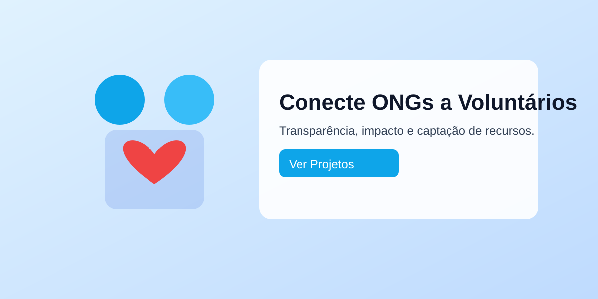
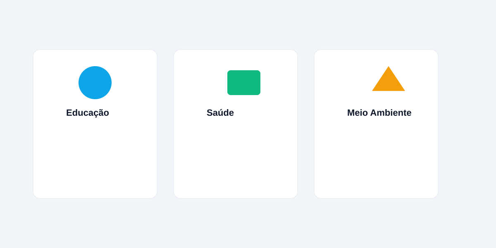
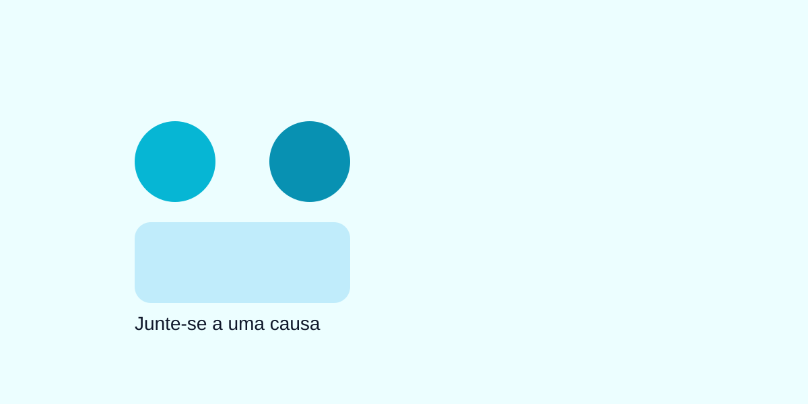
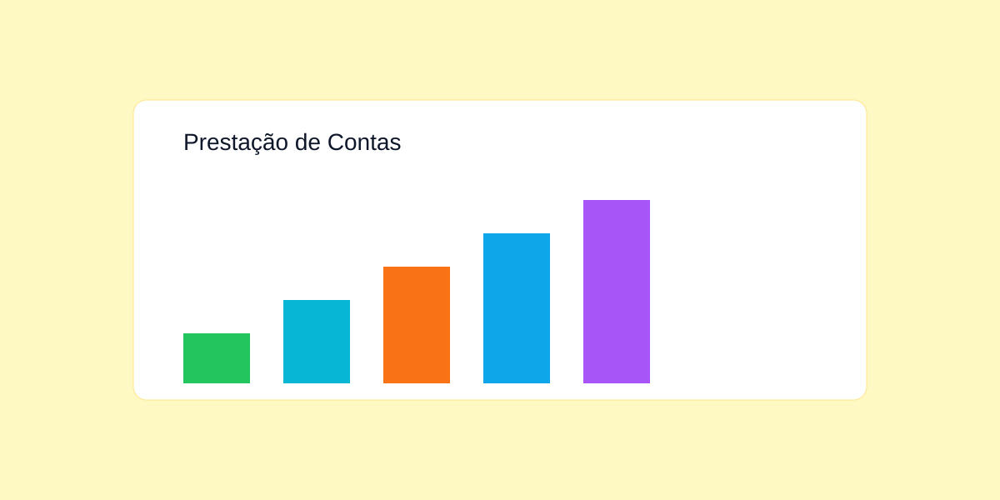

Reforço Escolar Comunitário
Aulas de apoio para crianças do ensino fundamental com foco em leitura e matemática.

ONG ConectaConheça nossas iniciativas, inscreva-se como voluntário e apoie financeiramente as causas.

Aulas de apoio para crianças do ensino fundamental com foco em leitura e matemática.
Atendimentos básicos, orientações nutricionais e atividades físicas ao ar livre.
Produção de alimentos e educação ambiental para a comunidade local.
Verifique as oportunidades abertas e candidate-se pelo formulário de cadastro. Você poderá acompanhar seu histórico e emitir certificados digitais.

Você pode apoiar projetos com doações únicas ou recorrentes. Acompanhe metas, progresso em tempo real e relatórios de transparência.
